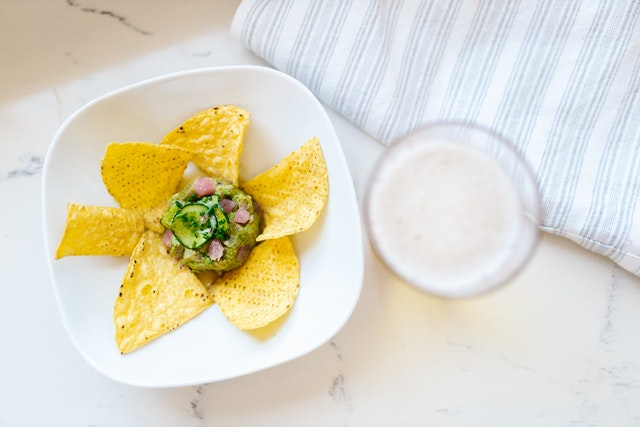

White Queso Dip

Description
This recipe makes some white queso dip for your tortilla
chips, nachos, etc.
Ingredients
- 1 pound white American cheese, cubed
- 3/4 cup of half-and half
- 1/4 cup pickled jalapeño peppers, diced
- 1 tsp. pickled jalapeño pepper juice
- 1/8 tsp. ground cumin
- 1/8 tsp. cayenne pepper
Steps
- Combine American cheese and half-and-half in a medium bowl.
Microwave in 1.5 minute intervals, stirring in between
intervals until melted.
-
Stir in jalapeños, jalapeño juice, cumin, and cayenne
pepper. Microwave for 30 seconds. Stir and serve.